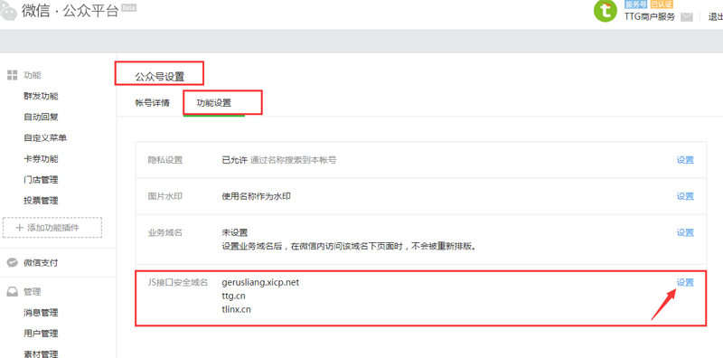
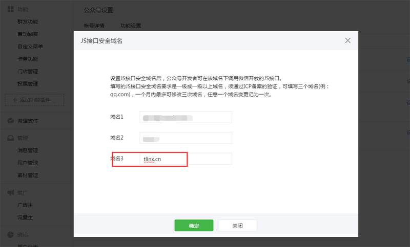
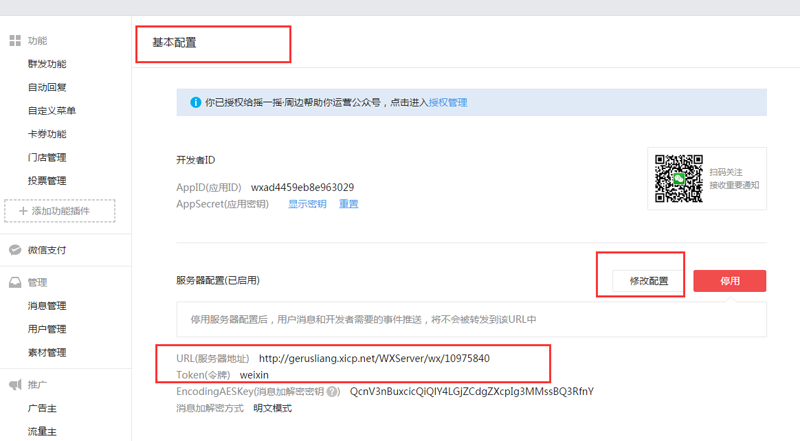
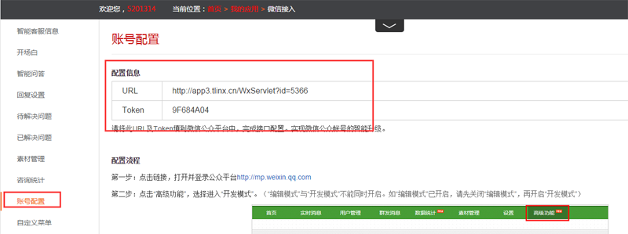
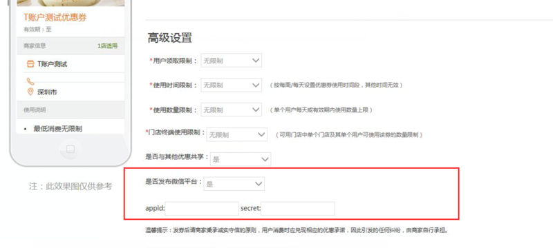

1、什么是微信卡券包？
商户使用微信卡券包功能后，用户可以将领取的优惠券放入微信--卡券包中，消费时直接出示消费码即可进行核销。
2、如何设置卡券包功能？
步骤一：商户首次使用卡券功能时，需先商户登录微信公众平台进行卡券包配置。
进入公众号设置--功能设置，添加 tlinx.cn的域名。


步骤二：进入基本配置页填写URL和Token。配置完成并启用。如之前配置过其他URL,则需修改配置。商户在开通的“微信接入”应用中可查看平台分配的URL和token。（如未开通，则先开通该应用服务。）


步骤三：在创建优惠券页面输入上图中开发者ID信息：APPID和Appsecret。首次设置输入后，后续无需再次输入。
